Plotting System Responses
This demo shows how to plot the time and frequency responses of SISO and MIMO linear systems.
Contents
Time Responses
For illustration purposes, create the following third-order transfer function:
sys = tf([8 18 32],[1 6 14 24])
Transfer function: 8 s^2 + 18 s + 32 ----------------------- s^3 + 6 s^2 + 14 s + 24
You can plot the step and impulse responses of this system using the step and impulse commands:
subplot(211), step(sys) subplot(212), impulse(sys)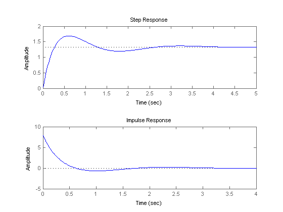
You can also simulate the response to an arbitrary signal, for example, a sine wave, using the lsim command. The input signal appears in gray and the system's response in blue.
clf
t = 0:0.01:4;
u = sin(10*t);
lsim(sys,u,t) % u,t define the input signal
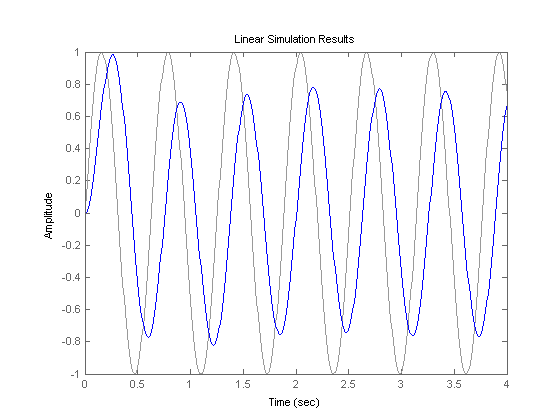 You can use the plotting commands with continuous or discrete TF, SS, or ZPK models. For state-space models, you can also plot the unforced response from some given initial state, for example:
A = [-0.8 3.6 -2.1;-3 -1.2 4.8;3 -4.3 -1.1];
B = [0; -1.1; -0.2];
C = [1.2 0 0.6];
D = -0.6;
G = ss(A,B,C,D);
x0 = [-1;0;2]; % initial state
initial(G,x0)
grid
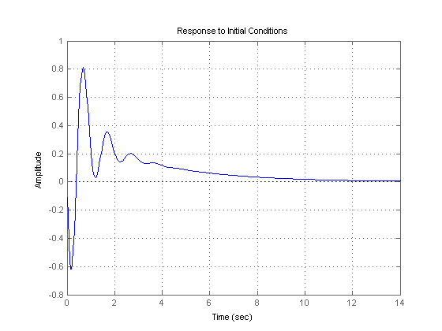 Frequency Responses
Frequency-domain analysis is key to understanding stability and performance properties of control systems. Bode plots, Nyquist plots, and Nichols chart are three standard ways to plot and analyze the frequency response of a linear system. You can create these plots using the bode, nichols, and nyquist commands. For example:
sys = tf([8 18 32],[1 6 14 24])
Transfer function: 8 s^2 + 18 s + 32 ----------------------- s^3 + 6 s^2 + 14 s + 24
bode(sys), grid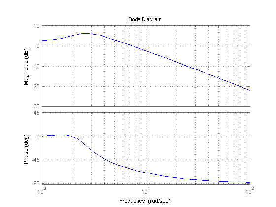
nyquist(sys), grid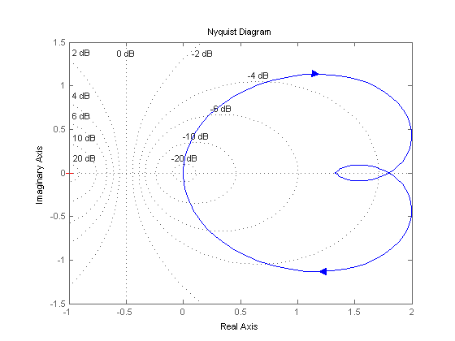
nichols(sys), grid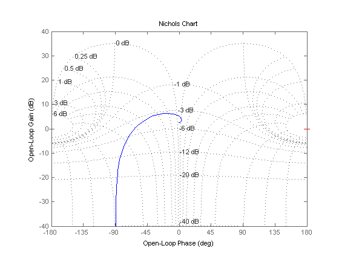
Pole/Zero Maps and Root Locus
The poles and zeros of a system contain valuable information about its dynamics, stability, and limits of performance. For example, consider the feedback loop in Figure 1 where

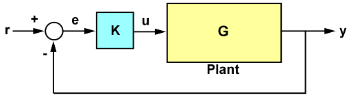
Figure 1: SISO Feedback Loop.
For the gain value k = 0.7, you can plot the closed-loop poles and zeros using pzmap:
s = tf('s');
G = -(2*s+1)/(s^2+3*s+2);
k = 0.7;
T = feedback(G*k,1);
pzmap(T)
grid, axis([-2 0 -1 1])
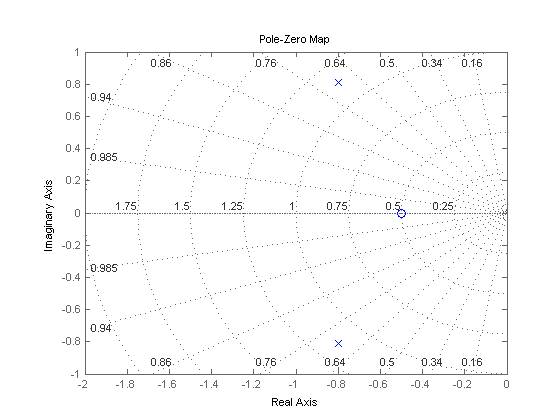 The closed-loop poles (marked by blue x's) lie in the left half-plane so the feedback loop is stable for this choice of gain k. You can read the damping ratio of the closed-loop poles from this chart (see labels on the radial lines). Here the damping ratio is about 0.7, suggesting a well-damped closed-loop response as confirmed by:
clf step(T)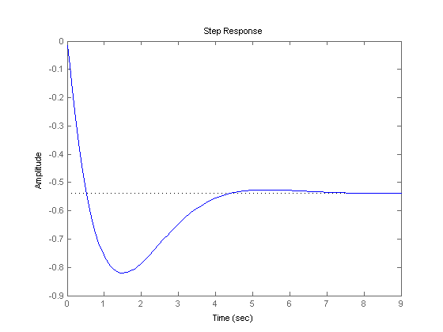
To further understand how the loop gain k affects closed-loop stability, you can plot the locus of the closed-loop poles as a function of k:
rlocus(G), grid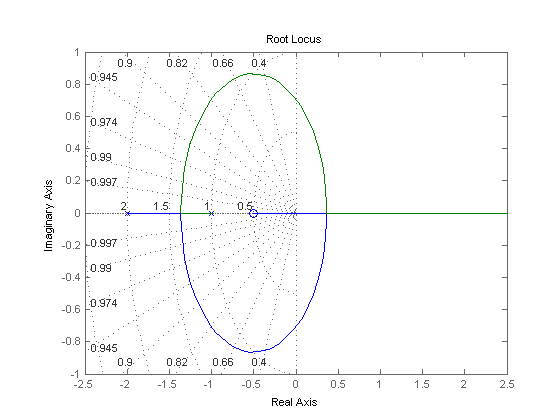
Clicking where the locus intersects the y axis reveals that the closed-loop poles become unstable for k = 1.51. So the loop gain should remain smaller than 1.5 for closed-loop stability.
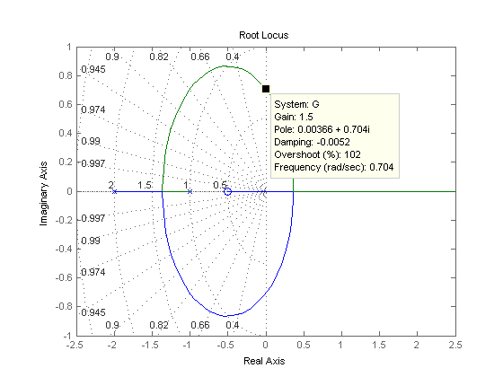
Response Characteristics
Right-clicking on response plots gives access to a variety of options and annotations. In particular, the Characteristics menu lets you display standard metrics such as rise time and settling time for step responses, or peak gain and stability margins for frequency response plots.
Using the example from the previous section, plot the closed-loop step response:
step(T)
Now, right-click on the plot to display the Peak Response and Settling Time Characteristics, and click on the blue dots to read the corresponding overshoot and settling time values:
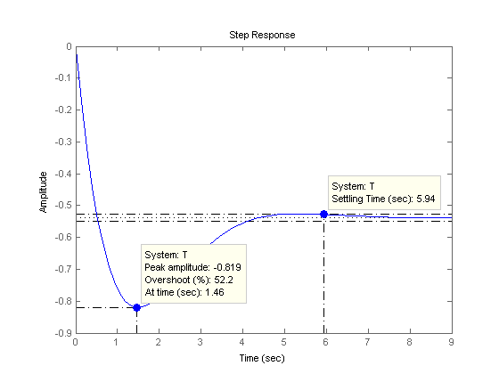
Analyzing MIMO Systems
All commands mentioned so far fully support multi-input multi-output (MIMO) systems. In the MIMO case, these commands produce arrays of plots. For example, the step response of the two-input, two-output system
sys = rss(3,2,2); sys.a = [-0.5 -0.3 -0.2 ; 0 -1.3 -1.7; 0.4 1.7 -1.3];
is a 2-by-2 array of plots where each column shows the step response of a particular input channel:
step(sys)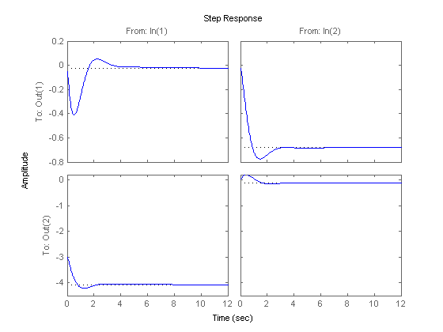
If desired, you can group all four responses on a single plot by right-clicking on the plot and selecting the I/O Grouping -> All submenu. The resulting plot is shown below.
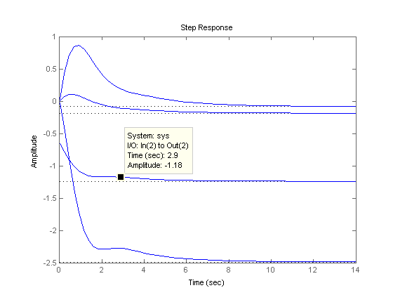
The following additional plots are useful for analyzing MIMO systems:
- Singular value plot (sigma), which shows the principal gains of the frequency response
- Pole/zero map for each I/O pair (iopzplot)
For example, plot the peak gain of sys as a function of frequency:
sigma(sys), grid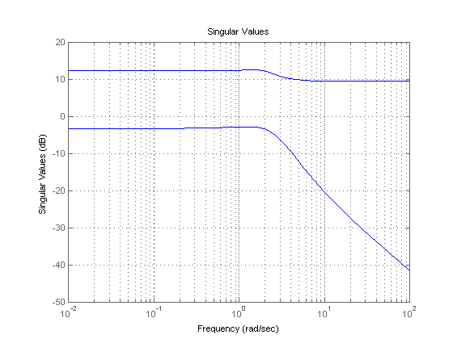
Comparing Systems
You can plot multiple systems at once using any of the response plot commands. You can assign a specific color, marker, or line style to each system for easy comparison. Using the feedback example above, plot the closed-loop step response for three values of the loop gain k in three different colors:
k1 = 0.4; T1 = feedback(G*k1,1); k2 = 1; T2 = feedback(G*k2,1); step(T,'b',T1,'r',T2,'g') legend('k = 0.7','k = 0.4','k = 1')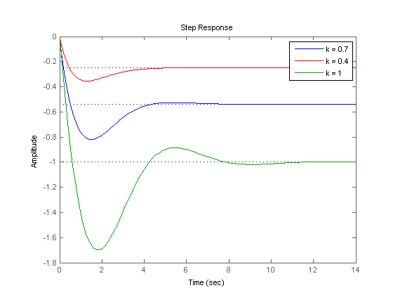